자연생태복원기사(구) (2021-03-07 기출문제)
1과목: 환경생태학개론
1. 1865년 독일의 물리학자 클라우지우스(Rudolf Clausius)에 의해 최초로 창안된 엔트로피는 어떠한 상태의 에너지를 말하는가?
- 사용 불가능한 에너지
- 잠재적 에너지
- 오염된 에너지
- 유기 에너지
(정답률: 75%)

2. 두 생물종의 상호작용 중에서 하나는 이익이 되고 또 다른 하나는 불이익이 되는 것만으로 나열한 것은?
- 포식, 기생
- 경쟁, 포식
- 기생, 편리공생
- 편리공생, 상리공생
(정답률: 90%)
3. 열대우림의 특징에 대한 설명으로 옳지 않은 것은?
- 종 다양성이 높다.
- 착생식물이 많다.
- 지표에서 가장 변동이 적은 환경이다.
- 토양은 염기성이며 층위구조가 잘 발달되어 있다.
(정답률: 68%)
4. 1971년 유네스코에서 지방주민의 이익을 보장하기 위해 지속적인 발전ㆍ보전 노력이 양립할 수 있는 가능성을 모색한 모형설정으로 기획되었던 생물권보전지역의 국제망 형성 계획은?
- World Heritage Site program
- Conservation Block program
- Conservation Corridor program
- Man and the Biosphere programme
(정답률: 64%)
5. 개체군 밀도에 대한 설명 중 옳지 않은 것은?
- 개체군 밀도는 출생률과 사망률로 정해진다.
- 개체군 밀도는 조밀도, 고유밀도, 상대밀도의 지표를 사용할 수 있다.
- 밀도가 높아지면 개체군내에서 경쟁이 심해져 사망률이 낮아진다.
- 개체군 밀도는/단위 면적당 개체수 혹은 생물체량으로 표시된다.
(정답률: 91%)
6. 습원의 생육지 환경에 대한 설명으로 틀린 것은?
- 습원환경은 이탄층의 단열작용으로 온도변화가 빠르다.
- 습원의 식충식물로는 끈끈이주걱, 벌레잡이통발 등이 있다.
- 습원의 물은 중성이지만, 물이끼 등의 식물생육이 많아짐에 따라 산성화된다.
- 습원의 토양은 항상 물로 채워져 있지만 가끔 수위가 낮아져 마르기도 하는데, 이때 식물의 지하부는 모관수를 이용한다.
(정답률: 77%)
7. 다음 중 생물농축을 일으키는 오염물질로 거리가 가장 먼 것은?
- 탄소
- 수은
- DDT
- 카드뮴
(정답률: 88%)
8. 초기 부영양화 단계에서 시안세균이 우점하게 되는 이유로 옳지 않은 것은?
- 질소 고정능력이 있기 때문이다.
- 낮은 온도에서도 잘 자라기 때문이다.
- 낮은 광농도에서도 잘 자라기 때문이다.
- N:P 비율이 낮아도 잘 자라기 때문이다.
(정답률: 61%)
9. 다음 설명의 ( )에 알맞은 용어는?
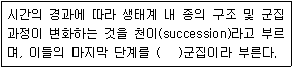
- 최종(final)
- 극상(climax)
- 극단(extreme)
- 극대(maximum)
(정답률: 90%)
10. 수중 용존산소량에 대한 설명으로 옳지 않은 것은?
- 수온약층에서 급격히 증가한다.
- 심수층에서는 소량만 존재한다.
- 공기와 직접 접하고 광합성이 활발한 표수층에서 가장 높다.
- 물 속에 용해되어 있는 산소량이며 단위는 주로 ppm으로 나타낸다.
(정답률: 73%)
11. 생물체에서 합성된 화학물질이 외부로 배출되어 다른 종의 생물에게 영향을 주는 작용을 타감작용(allelopathy)이라 한다. 타감작용과 관린이 없는 것은?
- 기피제
- 탈출제
- 페로몬
- 생육억제제
(정답률: 86%)
12. 도시생태계에서 옥상녹화의 기능과 거리가 가장 먼 것은?
- 생물서식처 기능
- 수환경 단절 기능
- 건축물 심미강화 기능
- 미기후 및 중기후적 완충기능
(정답률: 88%)
13. 생태계내의 에너지에 대한 설명 중 옳은 것은?
- 에너지는 생물군을 통해 순환한다.
- 에너지는 단일 방향으로 흐르고 열로 배출되며 순환되지 않는다.
- 에너지는 환경조건에 따라 흘러가기도 하고 순환하기도 한다.
- 에너지는 생산자, 소비자, 분해자 순으로 또는 그 역순으로 흘러간다.
(정답률: 69%)
14. 생물다양성에 영향을 미치는 요인 중 자원의 다양성에 대한 설명으로 옳지 않은 것은?
- 교란이 심하면 많은 종이 공존한다.
- 층상구조를 갖는 삼림에서 새의 종류가 많다.
- 자원이 다양해지면 그 곳에 사는 생물도 다양해진다.
- 물리적 환경조건이 다양한 지역이 균일한 지역보다 식물종 수가 많다.
(정답률: 89%)
15. 개체군(population)에 대한 설명으로 옳지 않은 것은?
- 개체군들의 집단을 군집이라고 한다.
- 특정한 공간을 차지하고 있는 특정종의 개체들의 집단을 의미한다.
- 개체군의 생태적 출생률은 실제 특정한 조건하에서의 개체군 증가율을 나타낸다.
- 군집의 성질을 결정하는데 가장 크게 기여하는 개체군을 최소종이라고 한다.
(정답률: 87%)
16. 영양단계에 대한 설명으로 옳지 않은 것은?
- 식물은 1차 영양단계에 해당한다.
- 초식동물은 2차 영양단계에 해당한다.
- 3차 소비자는 4차 영양단계에 해당한다.
- 고사된 식물에서 자라는 버섯은 3차 영양단계에 해당한다.
(정답률: 85%)
17. 식생의 동심원적 구조는 깊이에 따라 형성되는데, 호수의 중심부로부터 육상까지 일정한 경사를 가진 경우 호수의 중심부에 형성되는 식생은?
- 개구리밥, 연꽃 등의 부유식생
- 붕어마름, 검정말 등의 침수식생
- 애기부들, 갈대 등의 정수식생
- 버드나무 등의 소택관목식생
(정답률: 61%)
18. 생태적 지위가 동일한 짚신벌레속(Paramecium)의 두 종은 각각의 공간에서는 잘 자라지만 동일한 공간에서는 경쟁에 의해 타종을 배제한다는 사실에서 알 수 있는 것은?
- 중간교란설
- Allee의 법칙
- 경쟁배타의 원리
- Liebig의 최소량 법칙
(정답률: 90%)
19. 육상과 비교하여 해양에서 특히 생태학적으로 중요한 환경 요인으로 가장 적합한 것은?
- 빛
- 물
- 온도
- 염분농도
(정답률: 75%)
20. 생태계의 보존 및 자원관리에 대한 설명 중 옳지 않은 것은?
- 야생동물의 관리는 종 자체의 관리 뿐 아니라 이들의 서식지도 회복시켜 주어야 한다.
- 토지자원은 적절하게 관리되어야 하며 토지의 적합성과 능력에 따라 사용하여야 한다.
- 인간과 야생동물의 생존을 위해서 산림의 필요성에 대하여 대중에게 경각심을 고취시켜 밀렵을 대중화시켜야 한다.
- 최근의 산림벌채는 심각한 토양침식을 초래하였으며 토양의 부적절한 이용 및 화학물질의 대량 사용은 토양의 비옥도를 떨어지게 하였다.
(정답률: 92%)
2과목: 환경계획학
21. 산림자원의 조성 및 관리에 관한 법령에 따라 도시에서 국민 보건 휴양ㆍ정서함양 및 체험활동 등을 위하여 조성ㆍ관리하는 산림 및 수목으로 정의되는 것은?
- 생활림
- 가로수
- 임산물
- 도시림
(정답률: 86%)
22. 생태건축계획의 요소와 거리가 가장 먼 것은?
- 중앙 난방 위주 계획
- 기후에 적합한 계획
- 적절한 건축재료 선정
- 에너지 손실 방지 및 보존 고려
(정답률: 88%)
23. 자연 생태복원에 관한 설명 중 틀린 것은?
- 국토의 보전을 기본 입장으로 하고 있다
- 재해의 원인이 되는 비탈면 침식 방지, 토사 유출 방지, 수질 정화, 수자원 보전을 포함하고 있다.
- 자연생태복원이 어려운 장소를 확실하게 복원하기 위해 식물이 발아ㆍ생육하기 적합한 생육환경을 조성하는 것이다.
- 식재종은 훼손 지역에 새로운 식물사회를 조성하는 방향으로 선정되어야 한다.
(정답률: 87%)
24. 공공에 의한 토지이용계획의 역할로 볼 수 없는 것은?
- 정주환경의 현재와 장래의 공간구성 기능
- 토지이용의 규제와 실행수단의 제시 기능
- 세부 공간환경설계에 대한 지침 제시 기능
- 인간중심의 지속적 개발계획 제시 기능
(정답률: 83%)
25. 식생군락을 측정한 결과, 빈도(F)가 20, 밀도(D)가 10이었을 때 수도(abundance) 값은?
- 10
- 25
- 50
- 200
(정답률: 65%)
26. 도시ㆍ군관리계획결정으로 지정하는 경관지구의 세분에 해당하지 않는 것은?
- 수변경관지구
- 자연경관지구
- 특화경관지구
- 시가지경관지구
(정답률: 42%)
27. 국토의 계획 및 이용에 관한 법령에 따라, 아래와 같은 목적으로 실시하는 기초조사는?
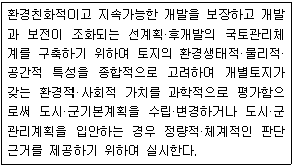
- 환경영향평가
- 토지적성평가
- 전략영향평가
- 토지환경성평가
(정답률: 58%)
28. 토지피복지도에 관한 설명 중 틀린 것은?
- 지구표면 지형지물의 형태를 과학적 기준에 따라 분류하고 동질의 특성을 지닌 구역을 지도의 형태로 표현한 환경주제도를 말한다.
- 해상도에 따라 대분류(해상도 100m급), 중분류(해상도 50m급), 소분류(해상도 20m급), 세분류(해상도 5m급)의 4가지 위계를 가진다.
- 지표면의 투수율에 의한 비점오염원 부하량 산정, 비오톱 지도 작성에 의한 도시계획 등에 폭넓게 활용한다.
- 우리나라 실정에 맞는 분류기준을 확정하여 1998년 환경부에서 최초로 남한지역에 대한 대분류 토지피복지도를 구축하였다.
(정답률: 63%)
29. 공원관리청이 자연공원을 효과적으로 보전하고 이용할 수 있도록 하기 위하여 공원계획으로 결정하는 공원자연보존지구에 해당되지 않는 대상지는?
- 자연생태계가 원시성을 지니고 있는 곳
- 생물 다양성이 특히 풍부한 곳
- 경관이 특히 아름다운 곳
- 등산객의 접근이 곤란한 곳
(정답률: 88%)
30. 생태ㆍ자연도를 작성하는 권역 구분에 해당하지 않는 것은?
- 1등급 권역
- 2등급 권역
- 3등급 권역
- 4등급 권역
(정답률: 87%)
31. 도시 생태계의 회복과 보존방안으로 거리가 가장 먼 것은?
- 비오톱의 보전과 창출
- 생물서식환경의 개선
- 생물서식공간의 연결
- 점적인 녹지공간확보
(정답률: 72%)
32. 람사협약에 대한 설명 중 틀린 것은?
- 현재와 미래에 있어서 습지의 점진적 침식과 손실을 막기 위함이다.
- 멸종위기에 처한 야생 동ㆍ식물종의 불법거래를 방지하기 위함이다.
- 1971년 이란의 람사(Ramsar)에서 협약이 조인되었다.
- 람사협약이 규정하는 습지는 자연적 또는 인공적, 담수나 염수에 관계없이 소택지, 습원 등을 말하며 간조 시에 수심이 6m를 넘지않는 해역을 포함한다.
(정답률: 88%)
33. 생태도시에 대한 설명 중 틀린 것은?
- 도시의 환경문제를 해결하고 환경보전과 개발을 조화시키기 위한 방안의 하나로 제시된 개념이다.
- 동ㆍ식물학, 생태학, 지질학 분야에서 새롭게 대두되어 도시개발, 도시계획, 환경계획으로 확산된 영역이다.
- 동ㆍ식물을 비롯한 녹지 보전, 에너지와 자원의 절약, 환경부하의 감소, 물과 자원의 절약, 재활용 및 순환 등이 중요하다.
- 도시를 하나의 유기적 복합체로 보고 다양한 도시 활동과 공간 구조가 생태계의 속성인 다양성, 자립성, 순환성, 안정성 등을 포함하는 인간과 자연이 공존될 수 있는 환경 친화적인 도시라고 할 수 있다.
(정답률: 69%)
34. 오염원인자 책임원칙 및 환경오염 등의 사전예방에 관한 설명으로 틀린 것은?
- 환경정책기본법에 명시
- 규제 해제 지향적인 수단
- 환경훼손으로 인한 피해의 구제에 드는 비용을 원칙적으로 부담
- 사업자 스스로 환경오염을 예방하기 위하여 스스로 노력하도록 촉진하기 위한 시책 마련
(정답률: 72%)
35. IUCN 적색목록의 멸종위기등급에 대한 설명 중 틀린 것은?
- 위급(CR: Critically Endangered) : 긴박한 미래의 야생에서 극도로 높은 절멸 위험에 직면해 있는 분류군
- 취약(VU: Vulnerable) : 위급이나 위기는 아니지만 멀지않은 미래에 야생에서 절멸위기에 처해 있는 분류군
- 절멸(EX: Extinct) : 사육이나 생포된 상태 또는 과거의 분포 범위 밖에서 순화된 개체군으로만 생존이 알려진 분류군
- 최소관심(LC: Least Concern): 위협범주 평가기준으로 평가하였으나 위협 또는 준위협 범주에 부적합한 분류군
(정답률: 87%)
36. 생물지리지역의 구분 및 특징에 대한 설명 중 틀린 것은?
- 생물지역(bioregion) - 생물지리학적 접근단위의 최대단위
- 하부생물지역(subregion) - 생물지역의 바로 아래 단계이며, 경관지구의 상위 단계
- 경관지구(landscape district) - 유역과 산맥에 의해 구분되며 관찰자가 인식할 수 있는 범위
- 장소단위(place unit) - 지형, 동ㆍ식물 서식현황 유역, 토지이용패턴을 중심으로 일차적으로 구분하며, 현지답사를 통하여 문화 및 생활양식을 추가로 고려하여 구분
(정답률: 43%)
37. 환경부장관은 관계중앙행정기관의장 및 시ㆍ도지사와 협조하여 해당 생태계의 보호ㆍ복원대책(우선 보호대상 생태계의 복원)을 마련하여 추진할 수 있는 바, 다음 중 그 대상이 아닌 것은?
- 생물다양성이 특히 높거나 특이한 자연환경으로서 훼손되어 있는 경우
- 자연성이 특히 높거나 취약한 생태계로서 그 일부 또는 전부가 향후 5년 이내 훼손될 가능성이 있는 경우
- 자연성이 특히 높거나 취약한 생태계로서 그 일부가 파괴ㆍ훼손되거나 교란되어 있는 경우
- 멸종위기야생생물의 주된 서식지 또는 도래지로서 파괴ㆍ훼손 또는 단절 등으로 인하여 종의 존속이 위협을 받고 있는 경우
(정답률: 77%)
38. 아래의 설명에 해당하는 환경가치추정방법은?
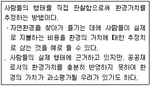
- 여행비용에 의한 추정
- 속성가격에 의한 추정
- 환경용량에 의한 추정
- 지불용의액에 의한 추정
(정답률: 58%)
39. 유네스코의 인간과 생물권(MAB) 계획에 의한 보호지역의 구분에 해당하지 않는 것은?
- 핵심지역(core area)
- 전이지역(transition area)
- 거점지역(lodgement area)
- 완충지대(buffer zone)
(정답률: 74%)
40. 다음의 내용이 설명하는 것은?
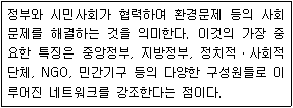
- 환경레짐
- 환경가버넌스
- 억제모델
- 몬트리올의정서
(정답률: 88%)
3과목: 생태복원공학
41. 해안 사방 망심기의 망 구획 크기로 가장 적합한 것은?
- 50×50cm
- 100×100cm
- 150×150cm
- 200×200cm
(정답률: 61%)
42. 다음 중 동물산포에 해당하지 않는 것은?
- 부착형 산포
- 피식형 산포
- 기계 산포
- 저식형 산포
(정답률: 87%)
43. 생태복원 계획의 수립을 위한 조사 및 분석을 지역적 맥락, 역사적 맥락적 및 생태기반환경으로 구분할 때, 다음 중 역사적 기록의 조사 및 분석 대상과 거리가 가장 먼 것은?
- 고지도
- 화분
- 인공위성 영상
- 수질
(정답률: 52%)
44. 양서ㆍ파충류의 이동통로 설계 시 고려해야 할 사항으로 틀린 것은?
- 채식지, 휴식지, 동면지의 훼손이 발생했을 경우 인위적인 복원이 필요하다.
- 집수정 주변에 철망이나 턱을 설치하여 침입을 방지하고 탈출을 용이하게 해준다.
- 도로의 경우 차량의 높이보다 높은 교목을 설치한다.
- 횡단배수관의 경사를 완만하게 한다.
(정답률: 73%)
45. 생태복원을 위한 식물재료의 조달방법 중 아래 설명에 해당하는 것은?
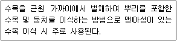
- 표토채취
- 매트이식
- 근주이식
- 소스이식
(정답률: 79%)
46. 토양에 서식하는 생물 중 토양생성에 중요한 역할을 하는 생물은?
- 거미
- 지렁이
- 메뚜기
- 벌
(정답률: 89%)
47. 다음 중 일반적인 산림토양의 단면을 가장 바르게 표현한 것은? (단, A: 용탈층, B: 집적층, C:모재층, F: 발효층, H:부식층, L: 낙엽층)
- L→H→F→A→B→C→모암
- L→F→H→A→B→C→모암
- L→H→F→B→A→C→모암
- L→F→H→B→A→C→모암
(정답률: 50%)
48. 다음 중 생물다양성의 감소 원인과 거리가 가장 먼 것은?
- 산성비
- 수질오염
- 유기농산물
- 외래종의 도입
(정답률: 85%)
49. 자연생태복원 공사 시행 시 시공관리의 3대 목표가 아닌 것은?
- 노무관리
- 품질관리
- 공정관리
- 원가관리
(정답률: 56%)
50. 복원의 유형 중에서 대체에 대한 설명에 해당하지 않는 것은?
- 훼손된 지역에 훼손 이전의 상태와 동일하게 만들어 주는 것을 말한다.
- 다른 생태계로 원래 생태계를 대신하는 것을 말한다.
- 생태계 구조에 있어서는 간단할 수 있지만, 생태적 기능은 보다 생산적일 수 있다.
- 도심지역의 옥상 생물 서식공간이 대표 사례이다.
(정답률: 69%)
51. 생태통로의 기능으로 거리가 가장 먼 것은?
- 천적 및 대형 교란으로부터 피난처 역할
- 단편화된 생태계의 연결로 생태계의 연속성 유지
- 야생동물의 이동로 제공
- 종의 개체수 감소 효과
(정답률: 86%)
52. 비달면 녹화에 이용되는 식물 중 콩과식물이 아닌 것은?
- 비수리
- 참싸리
- 자귀나무
- 붉나무
(정답률: 64%)
53. 해안 간척지 암거 배수관의 종류 중 천공기로 땅 속에 둥근 구멍을 뚫는 것으로 초기 배수효과는 좋으나, 일반적인으로 수명은 짧지만 공사비가 관 암거보다 매우 저렴하여 배수가 불량한 점토질 지역에서 적용하는 것은?
- 대나무와 폐목
- 자갈과 분쇄 암석
- 유공관
- 두더지 암거
(정답률: 62%)
54. 생태복원에 있어 생물종의 실제 분포와 보호 상황과의 괴리를 도출하여 보호 계획을 도입하는 방법은?
- GAP 분석법
- 시나리오분석법
- 장래분석법
- 비용편익분석법
(정답률: 75%)
55. 토양수분의 분류 중 틀린 것은?
- 토양입자와 결합 강도의 크기에 따라 결합수, 흡습수, 모세관수, 중력수로 구분된다.
- 결합수는 토양 수분의 한 성분으로서 식물에게 흡수되어 토양 화합물의 성질에 영향을 주지 않는다.
- 모세관수는 토양 공극 중 모세관에 채워지는 물이다.
- 중력수는 중력에 의해 아래로 흘러내리는 물로서 토양 입자 사이를 자유롭게 이동하는 물이다.
(정답률: 78%)
56. 도시지역 내에 생태공원을 조성하면서 생물종을 유치하고자 할 때, 서식가능성이 가장 낮은 생물종은?
- 잠자리
- 산개구리
- 맹꽁이
- 산양
(정답률: 83%)
57. 버드나무류 꺾꽂이 재료를 이용한 자연형 하천복원 공사에 대한 설명으로 옳은 것은?
- 꺾꽂이용 주가지의 직경은 1cm 미만인 것을 선발한다.
- 가지의 증산을 방지하기 위해 잎을 모두 제거한다.
- 채취후 12시간 이내에 꺾꽂이가 가능하도록 해야 한다.
- 시공은 생장이 정지한 11~12월 중순경에 한다.
(정답률: 75%)
58. 식물의 생활사 중 개화와 종자생산에 의한 번식, 구근에 의한 영양번식을 함으로써 차세대를 생산하는 시기는?
- 실생기
- 생육기
- 성숙기
- 과숙기
(정답률: 58%)
59. 아래 설명에서 A, B에 들어갈 용어가 모두 옳은 것은?
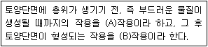
- A: 토양화학, B: 토양생성
- A: 토양생성, B: 토양화학
- A: 풍화, B: 토양생성
- A: 토양생성, B: 풍화
(정답률: 56%)
60. 다음 중 숲의 천이 단계에서 최상위에 해당하는 것은?
- 나대지
- 내음성 교목림
- 관목림
- 다년생 수목
(정답률: 79%)
4과목: 경관생태학
61. 다음 중 파편화가 생물다양성을 감소시키는 주요 메커니즘으로 거리가 가장 먼 것은?
- 초기배제 효과
- 종-면적 효과
- 가장자리 효과
- 경관저항 효과
(정답률: 48%)
62. 복원생태학과 경관생태학의 차이를 가장 잘 표현하는 개념은?
- 생물다양성의 증진 여부
- 서식지의 복원 및 확충
- 생태복원 대상의 규모
- 인간의 간섭과의 연관 정도
(정답률: 56%)
63. 아래 설명 중 ( )에 들어갈 용어로 가장 적합한 것은?
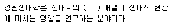
- 군집적
- 공간적
- 수자원적
- 에너지적
(정답률: 86%)
64. 옥상녹화의 필요성으로 거리가 가장 먼 것은?
- 토질 개선
- 경관질의 향상
- 도시 열섬화 완화
- 건축물 냉난방 에너지 절감
(정답률: 87%)
65. 조류의 메타개체군(metapopulation)에 대한 설명 중 틀린 것은?
- 삼림의 크기가 클수록 종 풍요도(species richness)가 높다.
- 비슷한 크기의 삼림에서는 삼림이 울창할수록 종 풍요도(species richness)가 높다.
- 비슷한 크기의 삼림에서는 가장자리 밀도가 낮을수록 종 풍요도(species richness)가 높다.
- 이웃 삼림과의 거리가 가까울수록 종 풍요도(species richness)가 높다.
(정답률: 79%)
66. 인위적 교란을 지속적으로 받고 있는 농촌경관의 경관생태학적인 복원 및 보전을 위해 반드시 고려되고 반영되어야 할 요소가 아닌 것은?
- 경작지
- 묘지
- 2차 식생
- 주택
(정답률: 66%)
67. 판편화에 민감하여 멸종 가능성이 높은 종이 아닌 것은?
- 지리적인 분포범위가 넓은 종
- 개체군의 크기가 작은 종
- 넓은 행동권을 요구하는 종
- 이동능력이 낮은 종
(정답률: 64%)
68. 등질지역과 결절지역에 관한 설명 중 틀린 것은?
- 등질지역인 경우 지역 전체를 동일 조건으로 본다.
- 결절지역인 경우 개개의 지역 성격이 다르기 때문에 지역 전체를 동일 조건으로 간주할 수 없다.
- 일반적으로 지역은 등질지역과 결절지역을 되풀이한다.
- 언덕 정상사면, 언덕 배사면, 골짜기의 저지와 같은 작은 결절지역이 모여 소유역이라는 등질지역을 이루고 구릉지라는 결절지역을 형성한다.
(정답률: 51%)
69. 경관의 변화에 따른 수문학적 현상에 대한 설명 으로 거리가 가장 먼 것은?
- 지피상태를 바꾸는 토지이용과 도시화는 지하로 침투되는 빗물의 양을 감소시킨다.
- 벌목에 의한 임상의 변화는 증발산의 양을 감소시킨다.
- 삼림이 경작지로 바뀌는 경우 지하수가 상승하여 토양에 염분을 집적시킬 수 있다.
- 지피상태를 바꾸는 도시화는 지표를 통해 하천으로 바로 흘러드는 물의 양을 감소시킨다.
(정답률: 44%)
70. 우리나라에서 광역적 그린네트워크를 형성할 때, 생태적 거점핵심지역(main core area)으로 작용하기 어려운 곳은?
- 자연공원
- 생태ㆍ경관보전지역
- 천연보호구역
- 도시근린공원
(정답률: 83%)
71. 다음 중 경관식생도에 해당하는 자료 내용이 아닌 것은?
- 지형정보
- 식생정보
- 서식처 정보
- 토지이용정보
(정답률: 51%)
72. 독일의 생물지리학자로, 경관생태학을 살아있는 식물군락과 경관의 어느 특정 구역을 지배하는 환경 조건 사이에서 나타나는 복잡한 인과관계의 네트워크를 연구하는 학문이라 정의한 사람은?
- Tilman
- Naveh
- Humboldt
- Troll
(정답률: 71%)
73. 환경영향평가에서 경관생태학적 개념을 도입할 때 주요 생물종에 대한 구체적인 보전대책 및 경관생태 네트워크 계획 등은 어느 단계에서 수행되는 것이 바람직한가?
- 현황조사 단계
- 조사결과분석 단계
- 영향예측 단계
- 저감방안수립 단계
(정답률: 54%)
74. Odum에 의해 시도된 육상생물군계와 생태계의 분류에서 우리나라가 속하는 것은?
- 툰드라
- 온대초원
- 한대침엽수림
- 온대활엽수림
(정답률: 82%)
75. 메타개체군의 개념을 적용한 종 또는 개체군 복원 방법이라고 보기 어려운 것은?
- 포획번식
- 유전자 전이
- 방사
- 이주
(정답률: 72%)
76. Landsat TM 위성자료의 활용에 대한 설명으로 옳은 것은?
- 밴드 1은 엽록소 흡수 및 식물의 종 분화 등을 알 수 있다.
- 밴드 4는 활력도 및 생물량 추정에 용이하다.
- 밴드 6은 육역과 수역의 분리에 용이하다.
- 밴드 7은 식생의 구분에 적합하다.
(정답률: 63%)
77. 원격탐사(remote sensing)의 특징에 대한 설명 중 틀린 것은?
- 지상이나 항공기 등에서 관측하는 것과는 달리 위성의 종류에 따라서 수백 km2에서 수천 km2에 이르기까지 넓은 지역에 대한 데이터를 얻을 수 있다.
- 가시광선 및 근적외선 센서, 열적외선 센서 등 복수의 전자파를 이용하여 정보를 얻을 수 있다.
- 동일 센서와 동일 해상력으로 항공사진 크기의 넓은 면적의 데이터를 얻기 위해 수 개월에 걸쳐 여러 번 촬영하여야 한다.
- 위성의 회귀일수별로 주기적인 데이터를 얻을 수 있다.
(정답률: 77%)
78. 우리나라의 습지보전법에 따른 연안습지의 개념 정의로 옳은 것은?
- 물이 퇴적물을 덮고 있거나 퇴적물이 식물의 뿌리가 있는 곳에 침투되어 있어 침수에 견디는 식물들이 존재하는 지역을 말한다.
- 만조 때 수위선과 지면의 경계선으로부터 간조 때 수위선과 지면의 경계선까지의 지역을 말한다.
- 조수간만의 차에 의해 주기적으로 드러나는 수위선과 지면의 경계선 이후부터의 습한 지역을 말한다.
- 바닷가와 만조 때 수위선부터 영해의 외측 한계까지의 습한 지역을 말한다.
(정답률: 76%)
79. 비오톱(Biotope)에 대한 설명으로 거리가 가장 먼 것은?
- 어떤 일정한 야생동ㆍ식물의 서식공간이나 중요한 일시적 서식공간이라는 의미로 사용한다.
- 비오톱의 보전과 관련하여, 인위적인 영향에 의해 만들어진 회귀한 비오톱에서의 자연적 천이는 적절한 간섭에 의해 바람직한 단계로 안정되는데, 일반적인 보전조치를 할 경우 에너지의 투입과 인위적 간섭의 회수를 최소한도로 하는 것이 중요하다.
- 여러 가지 토지의 식생이 같은 천이 단계에 있도록 하여 토지에 전형적이고 바람직한 종 다양성을 실현시킬 수 있다.
- 개별적인 비오톱은 항상 복합적인 전체의 일부분으로 인지되어야 한다.
(정답률: 46%)
80. 벡터자료와 래스터자료의 차이점으로 틀린 것은?
- 벡터자료는 공간적 정확성이 높은 장점이 있다.
- 벡터자료는 복잡한 데이터 구조를 갖는 단점이 있다.
- 래스터자료는 원격탐사 영상자료와 연계가 용이한 장점이 있다.
- 래스터자료는 다양한 모델링을 할 수 없는 단점이 있다.
(정답률: 63%)
5과목: 자연환경관계법규
81. 다음은 자연환경보전법상 생태ㆍ자연도에 관한 설명이다. ( )에 알맞은 것은?
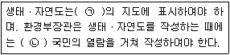
- ㉠: 3만분의 1 이상, ㉡: 7일 이상
- ㉠: 3만분의 1 이상, ㉡: 14일 이상
- ㉠: 2만5천분의 1 이상, ㉡: 7일 이상
- ㉠: 2만5천분의 1 이상, ㉡: 14일 이상
(정답률: 73%)
82. 자연공원법상 다음 [보기]가 설명하는 용도지구로 옳은 것은?
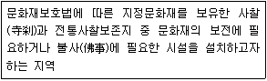
- 공원문화환경지구
- 공원문화보존지구
- 공원문화자원지구
- 공원문화유산지구
(정답률: 61%)
83. 환경정책기본법령상 이산화질소(NO2)의 대기환경기준으로 옳은 것은? (단, 1시간 평균치 기준으로 한다.)
- 0.01ppm 이하
- 0.⑤ppm 이하
- 0.10ppm 이하
- 0.15ppm 이하
(정답률: 52%)
84. 백두대간 보호에 관한 법률상 다음 ( )에 가장 적합한 용어는?
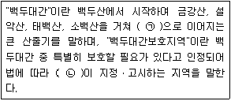
- ㉠: 지리산, ㉡: 환경부장관
- ㉠: 지리산, ㉡: 산림청장
- ㉠: 한라산, ㉡: 환경부장관
- ㉠: 한라산, ㉡: 산림청장
(정답률: 69%)
85. 자연환경보전법상 위임업무 보고사항 중 "생태ㆍ경관보전지역 등의 토지매수실적"의 보고 횟수 기준은?
- 수시
- 연 1회
- 연 2회
- 연 4회
(정답률: 50%)
86. 국토기본법상 국토계획의 구분에 해당하지 않는 것은?
- 부문별계획
- 도종합계획
- 시ㆍ군종합계획
- 읍ㆍ면종합계획
(정답률: 78%)
87. 자연환경보전법상 용어의 정의가 옳지 않은 것은?
- "자연생태"라 함은 자연환경적 측면에서 시각적ㆍ심미적인 가치를 가지는 지역ㆍ지형 및 이에 부속된 자연요소 또는 사물이 복합적으로 어우러진 자연의 경치를 말한다.
- "생물다양성"이라 합은 육상생태계 및 수생생태계(해양생태계를 제외한다)와 이들의 복합생태계를 포함하는 모든 원천에서 발생한 생물체의 다양성을 말하며, 종내(種內)ㆍ종간(種間) 및 생태계의 다양성을 포함한다.
- "생태축"이라 함은 생물다양성을 증진시키고 생태계 기능의 연속성을 위하여 생태적으로 중요한 지역 또는 생태적 기능의 유지가 필요한 지역을 연결하는 생태적서식공간을 말한다.
- "대체자연"이라 함은 기존의 자연환경과 유사한 기능을 수행하거나 보완적 기능을 수행하도록 하기 위하여 조성하는 것을 말한다.
(정답률: 73%)
88. 다음 중 생물다양성 보전 및 이용에 관한 법령상 생태계 교란 생물이 아닌 것은?
- 뉴트리아(Myocastor coypus)
- 황소개구리(Rana catesbeiana)
- 비바리뱀(Sibynohis chinensis)
- 파랑볼우럭(블루길)(Lepomis macrochirus)
(정답률: 86%)
89. 습지보전법상 습지보호지역으로 지정ㆍ고시된 습지를 「공유수면 관리 및 매립에 관한 법률」에 따른 면허 없이 매립한 자에 대한 벌칙기준은?
- 5년 이하의 징역 또는 5천만원 이하의 벌금
- 3년 이하의 징역 또는 3천만원 이하의 벌금
- 2년 이하의 징역 또는 2천만원 이하의 벌금
- 1년 이하의 징역 또는 1천만원 이하의 벌금
(정답률: 75%)
90. 야생생물 보호 및 관리에 관한 법령상 환경부장관은 수렵동물의 지정 등을 위하여 야생동물의 종류 및 서식밀도 등에 대한 조사의 최소한의 실시 주기로 옳은 것은?
- 1년마다
- 2년마다
- 3년마다
- 4년마다
(정답률: 67%)
91. 국토기본법에 명시된 "환경친화적 국토관리"를 위하여 국가 및 지방자치단체가 해야 할 일로 거리가 가장 먼 것은?
- 국토에 관한 계획 또는 사업을 수립ㆍ집행할 때에는 자연환경과 생활환경에 미치는 영향을 사전에 고려하여야 하며, 환경에 미치는 부정적인 영향이 최소화될 수 있도록 하여야 한다.
- 국토의 무질서한 개발을 방지하고 국민생활에 필요한 토지를 원활하게 공급하기 위하여 토지이용에 관한 종합적인 계획을 수립하고 이에 따라 국토공간을 체계적으로 관리하여야 한다.
- 산, 하천, 호수, 늪, 연안, 해양으로 이어지는 자연생태계를 통합적으로 관리ㆍ보전하고 훼손된 자연생태계를 복원하기 위한 종합적인 시책을 추진한다.
- 국제교류가 활발히 이루어질 수 있는 국토여건을 조성함으로써 대륙과 해양을 잇는 국토의 지리적 특성을 최대한 살리도록 하여야 한다.
(정답률: 85%)
92. 야생생물 보호 및 관리에 관한 법령상 멸종위기 야생생물 Ⅰ급 무척추동물로 옳지 않은 것은?
- 귀이빨대칭이(Cristaria plicata)
- 참달팽이(Koreanohodra koreana)
- 나팔고둥(Charonia lampas sauliae)
- 남방방게(Pseudohelice subquadrata)
(정답률: 49%)
93. 다음은 습지보전법령상 습지보전기본계획의 시행에 필요한 조치이다. ( )에 알맞은 것은?
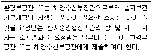
- 1월이내
- 3월 이내
- 6월이내
- 12월이내
(정답률: 50%)
94. 국토의 계획 및 이용에 관한 법률상에서 정하고 있는 용도구역으로 옳지 않은 것은?
- 수도계획구역
- 개발제한구역
- 시가화조정구역
- 수산자원보호구역
(정답률: 49%)
95. 국토의 계획 및 이용에 관한 법률상 토지의 이용실태 및 특성, 장래의 토지이용방향 등을 고려하여 구분한 국토의 용도지역으로 옳지 않은 것은?
- 개발지역
- 관리지역
- 도시지역
- 자연환경보전지역
(정답률: 47%)
96. 야생생물 보호 및 관리에 관한 법률상 야생생물의 보호ㆍ관리를 위해 설립할 수 있는 단체로 옳은 것은?
- 야생생물관리협회
- 전국자연보호중앙회
- 한국자연환경보전협회
- 한국야생동물보호협회
(정답률: 61%)
97. 독도 등 도서지역의 생태계 보전에 관한 특별법상 용어의 정의이다. ( )에 알맞은 것은?
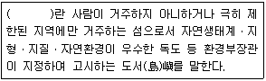
- 특정도서
- 특별보호도서
- 생태보호도서
- 생태경관보호도서
(정답률: 59%)
98. 자연공원법상 공원구역에서 공원관리청의 허가를 받아야 하는 행위허가사항으로 옳지 않은 것은?
- 가축을 놓아먹이는 행위
- 야생동물을 잡는 행위
- 건축물이나 그 밖의 공작물을 신축ㆍ증축ㆍ개축ㆍ재축 또는 이축하는 행위
- 야생동물을 잡기 위하여 화약류ㆍ덧ㆍ올무 또는 함정을 설치하거나 유독물ㆍ농약을 뿌리는 행위
(정답률: 48%)
99. 환경정책기본법령상 해역의 생태기반 해수수질기준 중 Ⅲ(보통) 등급의 수질평가 지수값은?
- 34~46
- 47~59
- 60~72
- 73~85
(정답률: 50%)
100. 자연환경보전법상 생태계보전협력금의 부과 및 납부에 관한 사항으로 옳지 않은 것은?
- 생태계보전협력금의 부과통지는 「국고금관리법 시행규칙」의 서식에 따른다.
- 생태계보전협력금의 부과금액별 분할납부 횟수는 2억원 초과의 경우는 6회 이하로 한다.
- 생태계보전협력금의 분할납부 신청을 받은 시ㆍ도지사는 분할납부의 사유 등을 검토하여 신청을 받은 날부터 10일 이내에 그 처리결과를 신청인에게 알려야 한다.
- 국가ㆍ지방자치단체 및 「공공기관의 운영에 관한 법률」에 따른 공공기관의 분할납부의 횟수는 2회 이하로 한다.
(정답률: 39%)